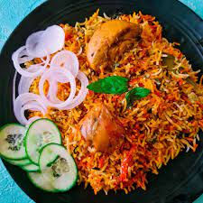
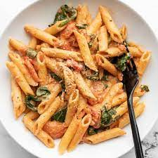
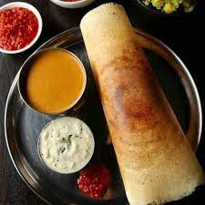
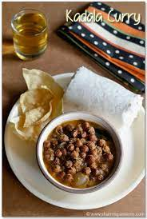
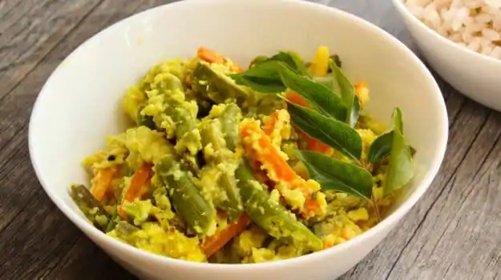
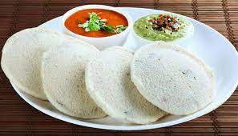
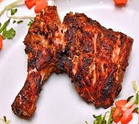
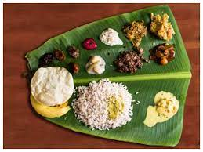

Chicken Biriyani

Biryani is a mixed rice dish originating among the Muslims of the Indian subcontinent. It is made with
spices, rice
Pasta

Pasta is a type of food typically made from an unleavened dough of wheat flour mixed with water or eggs,
and formed into sheets
Masala Dosa

Masala dosa is a variation of the popular South Indian dosa, which has its origins in Tuluva Udupi
cuisine of Karnataka.
Puttu Kadala

Puttu is basically a steamed rice flour and coconut log. The combination of soft puttu with kadala kari
(black chickpeas curry) .
Avial

Avial is an Indian dish with origins in the Kerala region, although it is equally popular in Tamil Nadu
and Udupi.
Idli

Idli or idly are a type of savoury rice cake, originating from the Indian subcontinent, popular as
breakfast foods in Southern
Pizza

Pizza is a dish of Italian origin consisting of a usually round, flat base of leavened wheat-based dough
topped with tomatoes..
Alfam

Alfahm is an Arabic grilled chicken. This chicken recipe is very popular in the middle east as it is
marinated with Arabian spice .
Sadhya

Sadya is a variety of vegetarian dishes traditionally served on a banana leaf in Kerala normally cooked
on Onam .